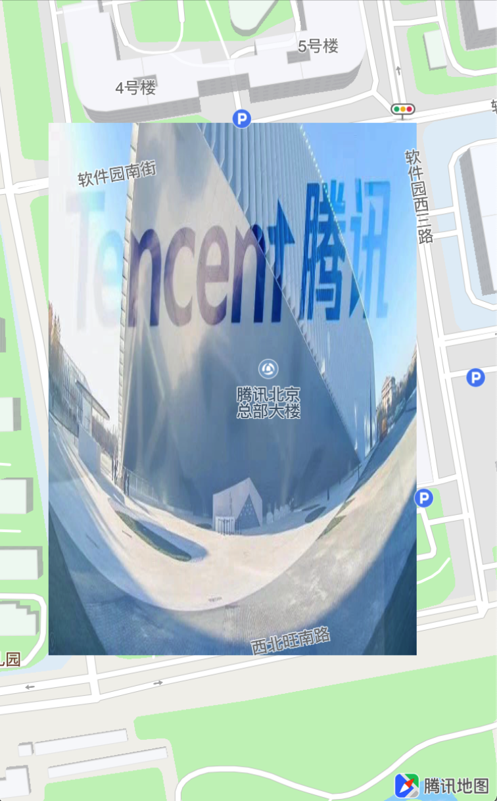
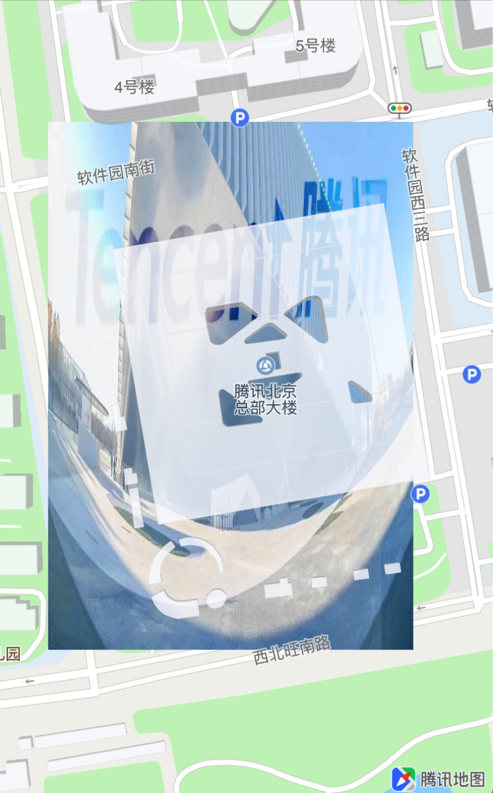
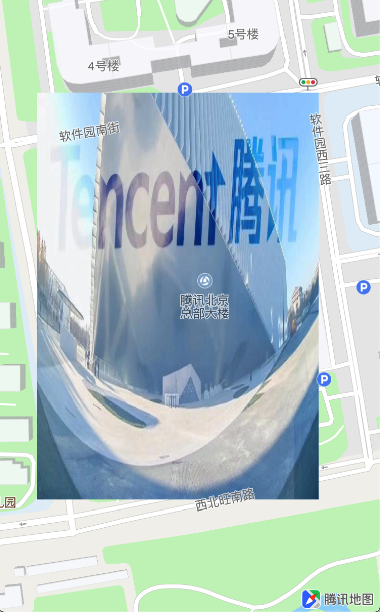
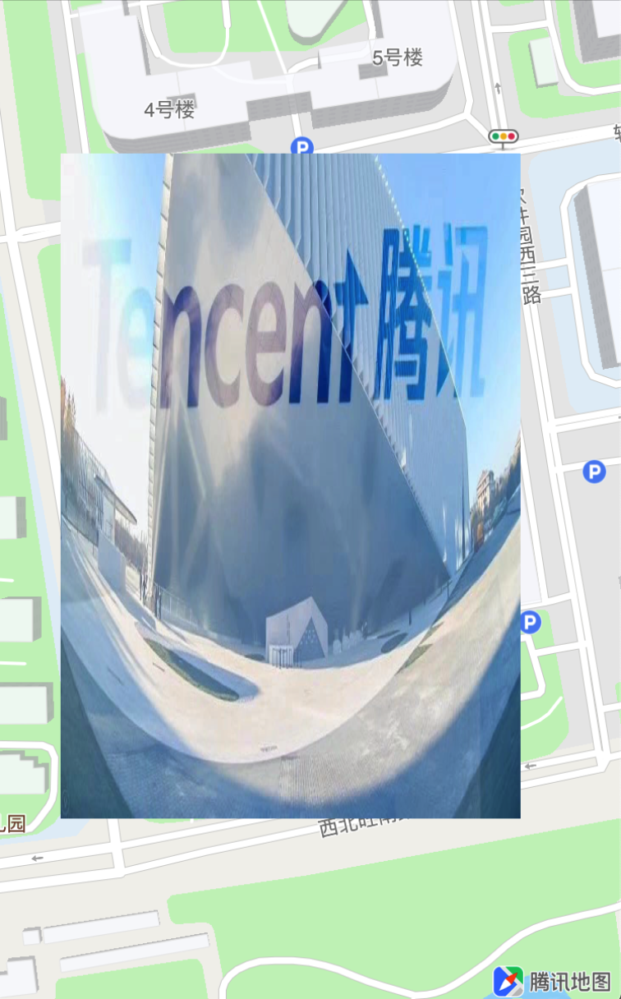

GroundOverlay
地图SDK 4.3.5版本新增了自定义图层GroundOverlay功能，该功能可以在地图的指定位置上，添加一张自定义图片。
创建自定义图层数据对象
GroundOverlay为图层的数据对象，通过数据对象并调用mapView的addOverlay:方法，将图层数据添加到地图中。
GroundOverlay的创建提供了以下两个类方法：
根据指定区域生成一个groundOverlay
接口如下所示：
/** * @brief 根据指定区域生成一个groundOverlay * @param bounds 指定的经纬度区域 * @param icon 绘制使用的图片 * @return 新生成的groundOverlay对象 */ + (QGroundOverlay *)groundOverlayWithBounds:(QCoordinateBounds)bounds icon:(UIImage*)icon;QCoordinateBounds为包含了东北角和西南角经纬度坐标的结构体，这两个方向坐标围成的矩形范围区域，就是自定义图层的区域：
typedef struct { CLLocationCoordinate2D northEast; /// 东北角点经纬度坐标 CLLocationCoordinate2D southWest; /// 西南角点经纬度坐标 } QCoordinateBounds;示例代码如下：
QCoordinateBounds bounds; bounds.northEast = CLLocationCoordinate2DMake(40.041936,116.274711); bounds.southWest = CLLocationCoordinate2DMake(40.03865,116.271739); UIImage *image = [UIImage imageNamed:@"groundOverlay"]; QGroundOverlay *overlay = [QGroundOverlay groundOverlayWithBounds:bounds icon:image]; [self.mapView addOverlay:overlay];
根据指定经纬度坐标生成一个groundOverlay
接口如下所示：
/** * @brief 根据指定经纬度坐标生成一个groundOverlay * @param position 图片在地图上的经纬度坐标 * @param zoomLevel 不损失精度绘制原始图片的地图等级 * @param anchor 绘制图片的锚点. 左上角为(0,1). 有效区间[0,1] * @param icon 绘制使用的图片 * @return 新生成的groundOverlay对象 */ + (QGroundOverlay *)groundOverlayWithCoordinate:(CLLocationCoordinate2D)position zoomLevel:(CGFloat)zoomLevel anchor:(CGPoint)anchor icon:(UIImage*)icon;示例代码如下：
UIImage *image = [UIImage imageNamed:@"groundOverlay"]; QGroundOverlay *groundOverlay = [QGroundOverlay groundOverlayWithCoordinate:CLLocationCoordinate2DMake(40.040219,116.273348) zoomLevel:17 anchor:CGPointMake(0.5, 0.5) icon:image]; [self.mapView addOverlay:groundOverlay];
将自定义图层添加到地图中
GroundOverlay图层数据对象添加到mapView之后，实现\mapView: viewForOverlay:方法，创建GroundOverlayView视图对象，将图层显示在地图中，示例代码如下：
- (QOverlayView *)mapView:(QMapView *)mapView viewForOverlay:(id<QOverlay>)overlay {
if ([overlay isKindOfClass:[QGroundOverlay class]]) {
_groundOverlayView = [[QGroundOverlayView alloc] initWithOverlay:overlay];
return _groundOverlayView;
}
return nil;
}
示例图如下所示：

调整自定义图层的层级
GroundOverlayView提供的displayLevel属性，可以修改图层在地图中的层级，从而调整poi、图层、道路等之间的压盖关系。
/**
* @brief 覆盖物的显示级别，决定了与POI等地理元素的压盖关系
*/
typedef NS_ENUM(NSInteger, QOverlayLevel) {
QOverlayLevelAboveRoads = 0, // 在道路之上楼块之下
QOverlayLevelAboveBuildings, // 在楼块之上POI之下
QOverlayLevelAboveLabels // 显示在所有POI之上
};
GroundOverlayView在道路之上，楼块之下：

GroundOverlayView在楼块之上，POI之下：

GroundOverlayView在道路之上，楼块之下：

更新GroundOverlay数据源
GroundOverlay数据对象通过构造方法添加到mapView之后，可以通过以下两个API来更新GroundOverlay的信息：
/**
* @brief 更新GroundOverlay.
* @param bounds 图片的在地图的覆盖范围
* @param icon 覆盖图片
*/
- (void)setGroundOverlayWithBounds:(QCoordinateBounds)bounds icon:(UIImage *)icon;
/**
* @brief 更新GroundOverlay, 内部会自动计算覆盖物大小，以满足zoomLevel下显示大小为icon大小.
* @param position 图片在地图上的经纬度坐标
* @param zoomLevel 图片在地图尺寸等同于像素的zoom值
* @param anchor 绘制图片的锚点. 左上角为(0,1). 有效区间[0,1]
* @param icon 覆盖图片
*/
- (void)setGroundOverlayWithCoordinate:(CLLocationCoordinate2D)position
zoomLevel:(CGFloat)zoomLevel
anchor:(CGPoint)anchor
icon:(UIImage *)icon;